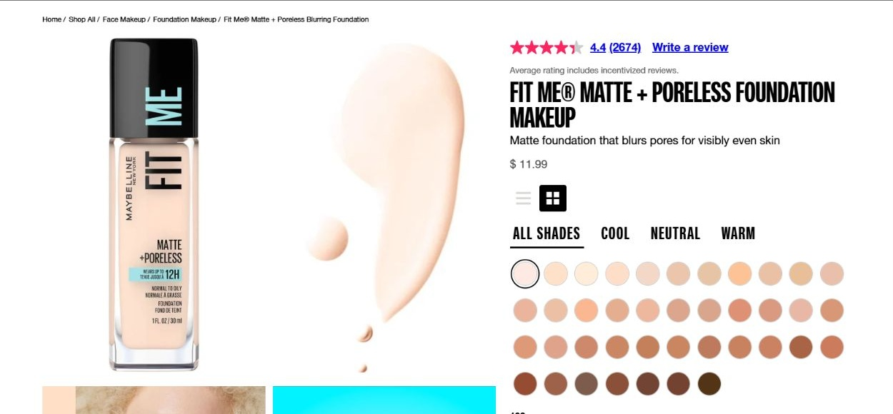
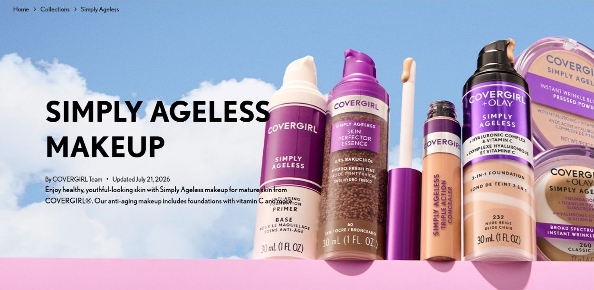
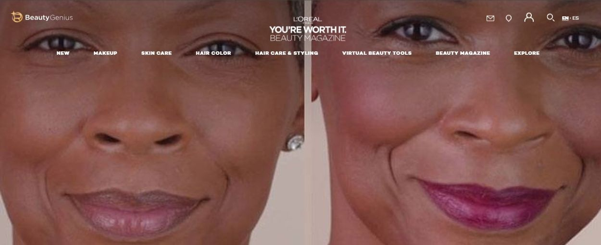
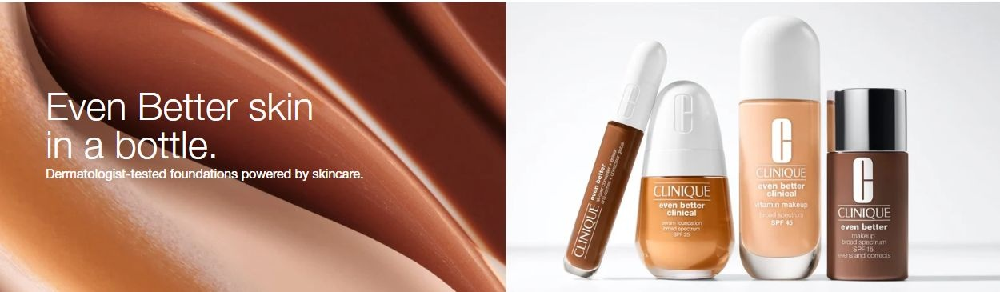
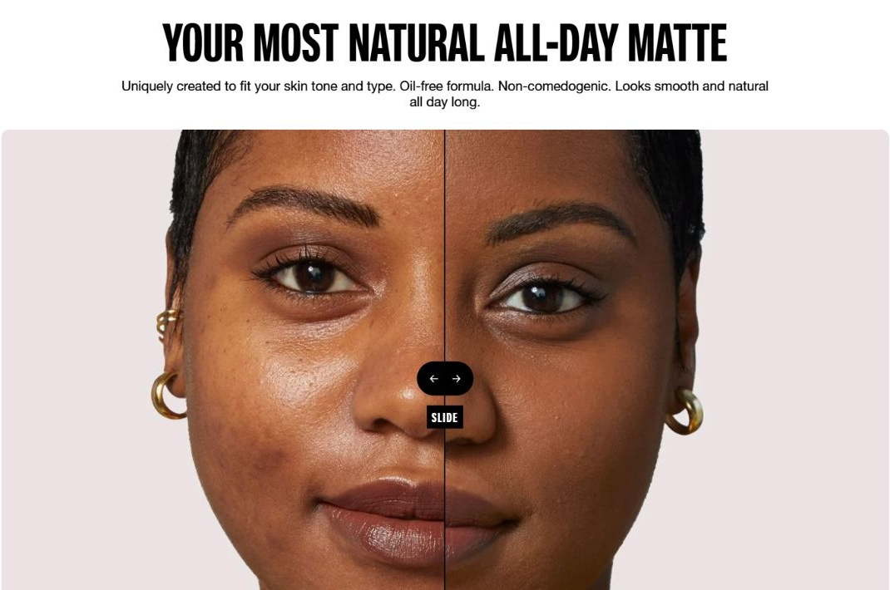
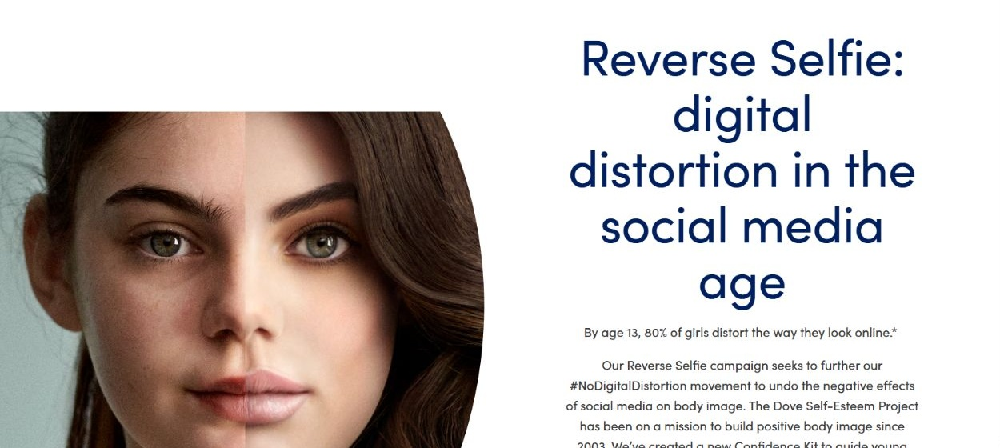
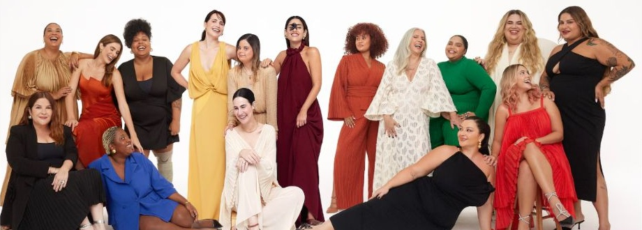
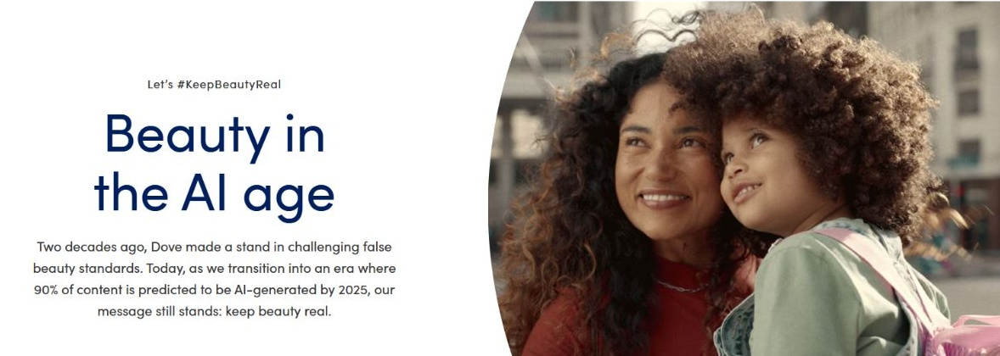

How do beauty advertisements define which human features should be visible, valued, or improved?
Turn it on to see every image in the archive smoothed toward the "perfect" finish.
Project 1 / Unmaking HumanVisual archive
The archive
Filter by kind of image, idea, or reading.
Visual 01 / 08Product promise / Texture
01 / Pores as a problem
Product promise / Texture

The bottle, liquid swatch, and shade grid give the face a commercial vocabulary: tone can be matched and texture can be improved. The promise of blurred pores places ordinary skin features within a problem-and-solution format. The shade grid recognizes varied complexions, yet the preferred finish remains smooth and even. This image belongs in the archive because inclusion across skin tones can coexist with a shared expectation of correction. Braidotti’s critique of the universal human helps us question the appearance treated as the standard.
Maybelline, Fit Me Matte + Poreless foundation product page. Screenshot, October 11, 2026. View original source
Visual 02 / 08Product promise / Age
02 / Mature skin, youthful ideal
Product promise / Age

Large lettering and oversized bottles make agelessness the collection’s visual identity. Its wording addresses mature skin while linking the desired outcome with a youthful appearance. Older consumers are acknowledged, but visible aging remains something to manage. The sky background and clean product arrangement make improvement look light and uncomplicated. This example helps ask what kind of human is imagined: a person allowed to age, or a consumer expected to make aging less visible? The caption analyzes the promotional framing, rather than claiming the products erase age.
COVERGIRL, Simply Ageless collection banner. Screenshot, October 11, 2026. View original source
Visual 03 / 08Representation / Maturity
03 / Making mature faces visible
Representation / Maturity

The side-by-side portrait places a mature face at the center of makeup advice. Visible lines remain part of the image, and the right portrait emphasizes lipstick, blush, and a styled appearance. This offers a contrast to advertising that makes mature people absent altogether. At the same time, the arrangement invites comparison between two presentations of one face. Through Braidotti, we can ask how inclusion works: does the image broaden beauty, or make recognition depend on a polished result? The screenshot does not establish whether either portrait was digitally retouched.
L’Oréal Paris, Your Easy Age Perfect Makeup Routine, header portrait. Screenshot, October 11, 2026. View original source
Visual 04 / 08Consumption / Authority
04 / Improvement in a bottle
Consumption / Authority

A glossy sweep of makeup sits beside carefully arranged bottles. The face itself is absent, replaced by a promise of better skin and products presented with clinical authority. This absence matters: the viewer is invited to imagine their own face as the site needing improvement. The smooth surface makes an ideal finish visible while leaving ordinary skin variation outside the frame. The human appears here primarily as a potential consumer. This example shows how an image can define expectations for bodies even when it contains no person.
Clinique, Even Better makeup collection banner. Screenshot, October 11, 2026. View original source
Visual 05 / 08Interface / Comparison
05 / The face as a comparison
Interface / Comparison

The dividing line makes one face into a visual test. Skin on the two sides appears different in shine and evenness, while the slider invites viewers to inspect and compare. Ordinary texture becomes the evidence against which the advertised finish is assessed. The framing turns a living face into a surface to evaluate. Mirzoeff’s attention to constructed images helps us examine how the interface organizes looking. This is an application comparison presented by the brand; it is not evidence that a social media filter was used.
Maybelline, Fit Me before-and-after application slider. Screenshot, October 11, 2026. View original source
Visual 06 / 08Counterimage / Distortion
06 / Showing digital distortion
Counterimage / Distortion

The split-face graphic contrasts a less polished presentation with a visibly styled one. Unlike a product advertisement that celebrates an improved result, this campaign identifies digital distortion as something to question. The comparison encourages viewers to notice the distance between a face and a manufactured beauty image. It connects with Mirzoeff’s distinction between what looks convincing and how an image is produced. However, the critique also builds Dove’s commercial identity around confidence. Resistance to perfection becomes both a message and a form of branding.
Dove, Reverse Selfie campaign webpage, split-face graphic. Screenshot, October 11, 2026. View original source
Visual 07 / 08Counterimage / Variety
07 / A wider field of beauty
Counterimage / Variety

The group portrait presents varied skin tones, body sizes, hair, clothing, and visible ages within one composition. Shared laughter and physical closeness shift attention from an isolated face toward relationships between people. It challenges the idea that beauty has one universal form. Yet the white studio setting, styling, and arrangement remind us that authenticity is also represented through deliberate choices. Braidotti helps ask whether the image expands the human standard or questions the need for one. No single group portrait can stand for everyone.
Dove, Real Beauty Pledge webpage, group portrait. Screenshot, October 11, 2026. View original source
Visual 08 / 08Counterimage / Authenticity
08 / Authenticity in the AI age
Counterimage / Authenticity

The banner pairs two smiling faces with the language of keeping beauty real. Curly hair, proximity, and an outdoor setting make connection central to the image’s appeal. The campaign positions human representation as something to protect in an age of synthetic imagery. Braidotti’s nature-culture continuum complicates a simple real-versus-technological divide: this campaign is itself a designed digital representation. Its promise can still be meaningful, but viewers must examine how authenticity is framed and sold. The archive ends by questioning who gets to define a real face.
Dove, Keep Beauty Real campaign, Beauty in the AI Age banner. Screenshot, October 11, 2026. View original source